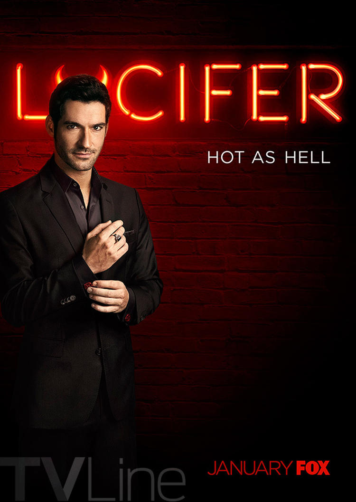
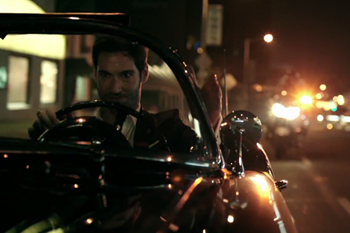

|
|

|
|
|
|
|
|
|  | |||
LUCIFERMonday 21:00 on FOX |
NEW SERIESBased on the Vertigo characters, the TV series centers on Lucifer who, bored and unhappy as the Lord of Hell, resigns his throne and abandons his kingdom for the gorgeous, shimmering insanity of Los Angeles, where he opens an exclusive piano bar called Lux |
||

Lucifer is the story of the original fallen angel.
Bored and unhappy as the Lord of Hell, Lucifer Morningstar has
resigned his throne and retired to the City of Angels, where
he owns an upscale piano bar called Lux. Lucifer is enjoying
his retirement and indulging in a few of his favorite things—wine,
women, song—when a beautiful pop star is brutally murdered outside of Lux.
For the first time in roughly 10 billion years, he feels
something awaken deep within him. He's not sure whether it's
his suppressed desire to punish the wicked or something deeper
and more confusing—is he actually capable of feelings for a human
being? The very thought disturbs him—as well as his best f
riend and confidante, Mazikeen (aka Maze), a fierce demon in
the form of beautiful young woman.
The murder attracts the attention of LAPD homicide detective
Chloe Dancer, who finds herself both repulsed and fascinated
by Lucifer. As they work together to solve the pop star's murder,
Lucifer is struck by Chloe's inherent goodness. Used to dealing
with the absolute worst of humanity, he begins to wonder if there's hope yet.
At the same time, God's emissary, the angel Amenadiel,
has been sent to Los Angeles to convince Lucifer to return to Hell.
But with the City of Angels at his feet and a newfound purpose,
Lucifer's having too much fun to go back now.
Sexy, dark and irreverent, this one-hour drama from Jerry Bruckheimer
Television, based on the characters created by Neil Gaiman,
Sam Kieth and Mike Dringenberg for DC Entertainment's Vertigo imprint,
offers up the concept that everyone might have a chance
at redemption... even the Devil.
The series focuses on Lucifer Morningstar, "who is bored and unhappy as the Lord of Hell and resigns his throne and abandons his kingdom for the beauty of Los Angeles, where he gets his kicks helping the LAPD punish criminals".
In September 2014, it was reported that DC and Fox were
developing a television series based on
The Sandman character
Lucifer, as originally written by Neil Gaiman.In February
2015, it was announced that Tom Ellis had been cast as Lucifer
Morningstar, and that Tom Kapinos would write the pilot, to
be directed by Len Wiseman. Lina Esco was originally cast
as Maze, however, the role was later recast with Lesley-Ann
Brandt. Nicholas Gonzalez portrayed Dan in the pilot episode.
In May 2015, the series was officially picked up for 13
episodes for the 2015–16 season. Fox then hired
Almost Human alum Joe Henderson as showrunner,
with Kapinos remaining on the series in a lesser capacity.